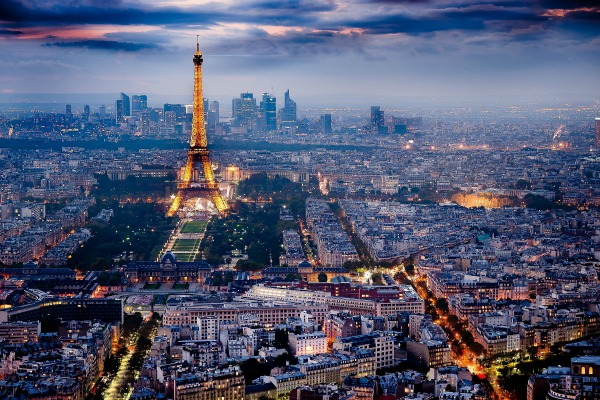

BODYBALANCE je trening koji kombinuje elemente Yoge, Pilatesa i Tai-Chi-a. Zahvaljujući insistiranju na dubokom disanju, kao i serijama istezanja, pokreta i položaja biranih tako da budu savršeno kompatibilni sa muzikom koja ih prati, vežbači sa ovog treninga odlaze smireni, fokusirani i opušteni. BODYBALANCE unapređuje snagu, fleksibilnost i telo dovodi u stanje apsolutne relaksacije. Program je, zbog svoje umerenosti i svrsishodnosti namenjen različitim tipovima ljudi : onima koji vole programe umerenog i slabijeg intenziteta, kao i energičnim vežbačima kojima je potrebna povremena delotvorna doza opuštanja.
Savremeni užurbani način života, pored mnogih prednosti koje nam pruža, takođe je doveo i do toga da se poveća broj radnih sati i obaveza kako na poslu tako i kod kuće, što utiče i na konstatno prisustvo napetosti. Nedostatak odmora i stalna izloženost stresu mogu ozbiljno da naruše naše zdravlje. Body Balance – trening za telo, dušu i um. Jedan od najboljih i najčudotvornijih lekova u borbi protiv stresa jeste fizička aktivnost. A moja preporuka vama je Body Balance. To je Les Mills program koji pripada grupi Body & Mind programa. Inspirisan je pokretima i vežbama iz Tai Chi-a, joge i pilatesa. Istovremeno utiče i na telo i na um, pomažući nam da poboljšamo snagu, fleksibilnost ali i da se osećamo snažno, smireno i fokusirano.

PARIZ,GRAD SVETLOSTI- Prestonica Francuske zasluženo spada među najlepše gradova sveta, a razloga za to je mnogo. Od neverovatnih atrakcija kakve su Ajfelov toranj i Trijumfalna kapija, preko magične Sene, neprevaziđenog Luvra do pogleda koji se pruža sa Sakre-Kura. Na sve to treba dodati i šetnju Jelisejskim poljima, kojoj tek nekoliko avenija u svetu može da pripreti, i hranu iz snova, jer ako neko zna kako se dobro jede, to su Francuzi.
Ali, krenimo od početka. Pariz je osnovan još sredinom trećeg veka pre nove ere, kada su ga naselili Kelti. Zahvaljujući tome što je u XIX veku bio jedan od prvih gradova u Evropi koji je dobio ulično osvetljenje, dobio je nadimak ’grad svetlosti’ koi mu je ostao do danas.
Mnogi kažu da je Pariz sinonim za sve što je francusko. Poznat je po odličnom urbanističkom planu, svojoj arhitekturi, muzejima, mostovima, katedralama i luksuznim bulevarima. Prvobitno je bio smešten na ostrvu na sredini Sene, ali se brzo proširio na obe obale te reke i sada zauzima površinu od preko 100 kvadratnih kilometara. Desna obala Sene poznata je kao komercijalan centar grada, dok je leva dom Univerziteta i svega što se podrazumeva kao intelektualno i umetničko. Zbog romantike i misterije kojom grad odiše, Pariz je tokom godina bio mesto radnje brojnih romana i filmova.
Verovatno najpoznatiji simbol Pariza je Ajfelov toranj, koji se kada je izgrađen, krajem XIX veka, našao na udaru poznatih francuskih umetnika zbog svog dizajna. Međutim, Parižani su ga brzo prihvatili, a iako je od njegove izgradnje prošao skoro jedan i po vek, i dalje je najviša građevina u prestonici Francuske, sa 324 metra.
Pariz je poznat i kao jedna od prestonica mode, pa ne čudi što Nedelja mode u ’gradu svetlosti’ svake godine privlači veliki broj poznatih ličnosti iz svih sfera. Isto važi i za kulinarstvo, a kada dođete u Pariz ne smete da propustite da probate njihove sveže kroasane, makrone ili supu od luka, kakve nećete naći nigde drugde na svetu.
UPOZNAJTE NAJBOLJE KUHINJE SVETA-Na svakom putovanju hrana je neizostavan deo doživljaja i potrebno je da probate makar jedno jelo koje će vas približiti tamošnjoj kulturi. Lokalni specijaliteti nekih zemalja predstavljaju sam vrh svetske gastronomije.
Koje uslove jelo treba da zadovolji da bi ponelo titulu najboljeg svih vremena? Da li je to jednostavnost, specifičan ukus ili prefinjenost? Verovali ili ne, jela koja se danas smatraju specijalitetima i nalaze se na jelovnicima najpoznatijih svetskih restorana, prvenstveno su bila omiljena narodna jela. To je uglavnom slučaj sa slanim jelima italijanske, španske i francuske kuhinje.Druga vrsta jela, kao što su slatki specijaliteti, svoju popularnost dobila je na samom početku zahvaljujući tome što je pripremana za nekog značajnog plemića ili nekim posebnim povodom.
IZAZOV KOJI ĆETE PRIHVATITI: najbolji sladoledi na svetu koje morate probati.
Italija- Kako talijani kažu „gelato“, stvarno je sladoled za sebe. Gotovo da nema mesta u Italiji na kojem ne možete probati odličan sladoled pa se slobodno opustite i istražujte.
Argentina,helado- Iako sam naziv znači sladoled, ovo je puno više od toga. Svi koji su probali talijanski „gelato“ znaju da je „helado“ jednako dobar, ako ne i puno, puno ukusniji i kremastiji.
Vermont - Ben & Jerry's, sladoled u Vermontu nije stvar ukusa i stila, već stvar branda. I to ne bilo kojeg branda, već branda Ben & Jerry's. Njihova fabrika toliko je popularna da je s vremenom postala svojevrsna turistička atrakcija.
Cornwall, clotted Cream Ice Cream- Cornwall je Engleski gradić, u Engleskoj poznat po usirenom vrhnju. Kada se od takvog vrhnja pripremi sladoled, dobivamo najkremastiji sladoled na svijetu.
Izrael, sladoled od halve- Halva je ukusna slastica sama po sebi, i prava je poslastica, ne samo u Izraelu, već i drugim arapskim zemljama. Ako volite halvu, verojatnost da će vam ovaj sladoled biti omiljeni je zagarantovana.
UMETNOST je najintenzivnija forma individualizma koju svet poznaje.Све што човек ради и у шта улаже љубав, вољу и жељу јесте уметност, јер уметност није ништа друго него рад прожет љубављу. Некада се деси да неко уметничко дело остави толико јак утисак да се испунимо различитим осећањима и останемо без даха...
ORHIDEJA simboliše želju za uspehom i posebnost. Ovaj nežni cvet, u skladu sa svojim izgledom, može simbolisati i ljubav, rafiniranu lepotu, romansu, erotiku i želju za intimnošću. Orhideje mozete pokloniti i nekome kome želite uspeh u karijeri. Istraživanja tvrde da postoji od 25000 do 30000 vrsta orhideja.
Često se može čuti da su orhideje idealan cvet za one koji poseduju neobičnu lepotu, ali istovremeno vole jednostavnost, svedenost i poseduju urođeni smisao za dizajn i estetiku. Ipak, ukoliko planirate da nekoj dragoj osobi poklonite orhideju, dobro razmislite pri odabiru boja! Plavom orhidejom osobi šaljete poruku da ona za vas predstavlja raritet, unikat, jedinstveno stvorenje. Ona jeste simbol ljubavi ali u kombinaciji sa plavom bojom emocije prožima spiritualnost, pa je u pitanju nesvakidašnja veza, nešto što se ne nalazi baš tako često. S druge strane, za belu orhideju se odlučite ukoliko osobi želite da pošaljete jasnu poruku koja glasi “drag/a si mi”, jer ona simbolizuje lepotu i eleganciju, a poseduje i dozu nevinosti koja ne obavezuje. Suprotno tome, crvena će naglasiti vašu strast, odlučnost, istrajnost i neskrivenu ljubav, dok će njeni nešto svetliji tonovi kao i ružičasta boja akcenat staviti na sreću i radost kojom vas ispunjava vreme provedeno sa dotičnom osobom. Ukoliko želite da nekome dodelite titulu najboljeg, posebnog prijatelja, poklonite mu žutu orhideju, jer je upravo ona simbol prijateljstva ali i novih početaka; dok se orhideje u boji lavande obično poklanjaju majkama ali i svim ženama koje za nas predstavljaju oličenje elegancije, gracioznosti, i ženstvenosti. Nešto zagasitiji tonovi ovog cveta, poput ljubičaste, vezuju se za autoritet, poštovanje i divljenje, pa ih možete pokloniti nekom koga smatrate svojim uzorom ili nekoj uglednoj osobi. Za koju god kombinaciju da se odlučite na kraju – sigurni smo da ne možete pogrešiti. Ko bi još odbio ovako savršen cvet?